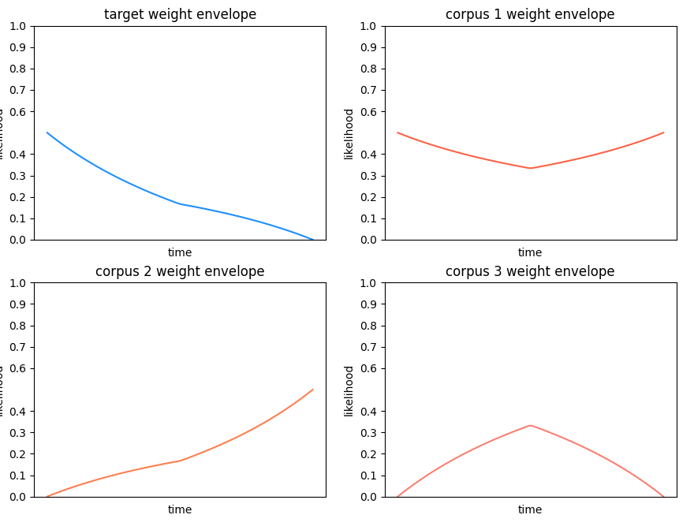

Tutorial 7: Mixing corpora
As has been mentioned in previous tutorials:
It is possible to use multiple audio
Corpusinstances when creating aMosaic, by passing alistto thecorpusargument inMosaic.Additionally, we can also control the “mix” between the original audio target and the
Corpusinstances when converting aMosaicto audio, with thecorpus_weightsargument in theMosaic.to_audio()method.
Hint
Technically speaking, the corpus_weights argument does something more specific than controlling the mix or gain between target and corpora.
It sets the likelihood of a Corpus grain being chosen over one from the original audio target,
which results in something akin to controlling the mix between the two.
For instance, let’s consider different cases using one Mosaic that uses three different Corpus instances. Let’s first create the Mosaic:
from gamut.features import Corpus, Mosaic
corpus_1 = Corpus()
corpus.read('path/to/my_corpus_1.gamut')
corpus_2 = Corpus()
corpus.read('path/to/my_corpus_2.gamut')
corpus_3 = Corpus()
corpus.read('path/to/my_corpus_3.gamut')
mosaic = Mosaic(target='/path/to/target/audio/file.wav', corpus=[corpus_1, corpus_2, corpus_3])
There are multiple ways in which we could control the mix between each input Corpus instances, and the original audio target:
intorfloatvalue: The simplest one is by specifying a single value that sets the mix between target and corpora, from beginning to end.
# corpus grains will be chosen with a likelihood of 80%, and target grains with a 20% likelihood.
mosaic.to_audio(corpus_weights=0.8).play()
listofintand/orfloatvalues: To fine-tune things further, we can dynamically vary the likelihood with alist, as previously shown in Tutorial 5: Audio musaicking parameters. This would represent the time-varying likelihood for all corpora, evenly distributed among them, vs. the original audio target.
# The likelihood of corpus grains will gradually increase from 0% to 100%. This would result in
# starting with sounds excusively from the original audio target and gradually grains from the corpora
mosaic.to_audio(corpus_weights=[0, 1]).play()
Hint
It’s also possible to use the (x, y) coordinate format, by making a list of tuples instead of single float or int values.
The most nuanced approach, however, is to individually control the likelihood of target and corpora. This is achieved by creating a list of lists, where the elements of the inner lists can be int/ float values, or tuples.
This provide much more control over the way the target and corpora in the final audio output. Here’s an example:
# likelihood of target gradually changes from 50% down to 0%
target_weight = [1, 0]
# likelihood of corpus 1 will fluctuate between 50% and around 33%
corpus_1_weight = 1
# likelihood of corpus 2 gradually changes from 0% to 50%
corpus_2_weight = [0, 1]
# likelihood of corpus 3 gradually changes from 0%, to around 33% half way through, back to 0% by the end.
corpus_3_weight = [0, 1, 0]
# group weights in a list
corpus_weights = [
target_weight,
corpus_1_weight,
corpus_2_weight,
corpus_3_weight,
]
# convert mosaic to audio and play back blend of corpora with different weight envelopes
mosaic.to_audio(corpus_weights=corpus_weights).play()
Here’s a visual representation of all weights interacting with each other:
Hint
As the plot shows, the actual weights may change once combined, since they must be normalized to ensure their sum along the y axis is always 1.0.
For instance, this explains why corpus 1, despite having a constant value of 1 in the code, does fluctuate, due to the other weights affecting the fraction that it represents relative to 1.0.
Note
When taking this approach, the order of items in list passed to corpus_weights matters: The first weight is always the target (i.e., weight at index 0), and the subsequent ones belong to each Corpus in the input.
Warning
Make sure the number of Corpus matches the number of weights passed to corpus_weights.